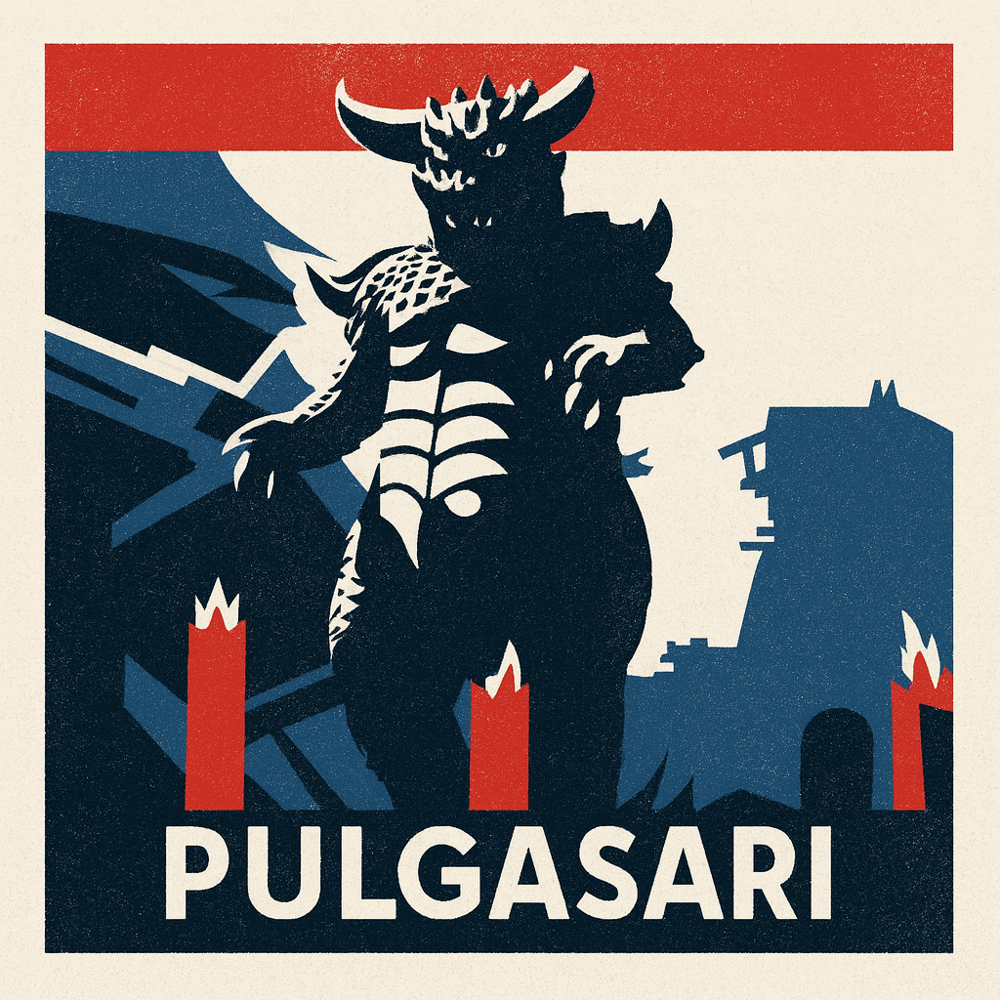
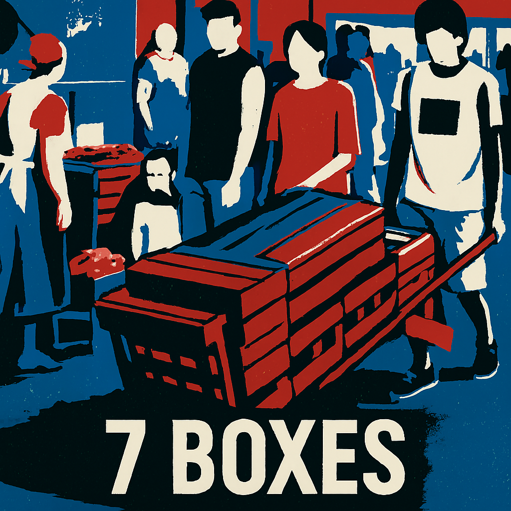

Episodes
Explore the films we’ve covered so far — cult classics, hidden gems, and international cinema worth your time.
 E001
E001
Man Bites Dog
Belgium
A 1992 cult classic black comedy mockumentary following a serial killer through the lens of a novice documentary crew. Their success becomes morally entangled with the violence they capture.

E002Pulgasari
North Korea
Insert synopsis

E0037 Boxes
Paraguay
Insert synopsis
 E004
E004
Kontroll
Hungary
A disillusioned ticket inspector navigates a surreal, dangerous world beneath Budapest, where authority is hollow, reality feels suspended, and escape may be more psychological than physical.
 E005
E005
Christiane F.
Germany
A bleak and iconic 1981 biographical drama directed by Uli Edel, featuring music by David Bowie and a raw portrayal of youth, addiction, and alienation.
 E006
E006
Oscar 2026 Special
International
In this special episode Nicolai is joined by his wife, Linda, to discuss the nominees for the Academy Award for Best International Feature Film